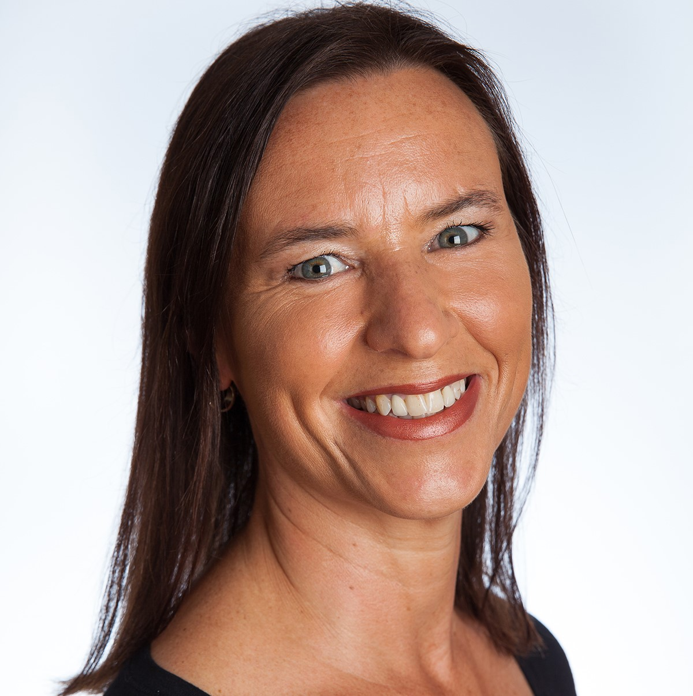

Over Mij
Over mij
Ik heet Willemijn Hornsveld. Ik ben kindertherapeut in Den Haag (Statenkwartier).
Ieder kind verdient het om ontspannen door het leven te gaan. Daarom heeft ieder kind dat last heeft van spanningsklachten, recht op hulp. Die hulp bied ik graag. Een gezonde balans in een kind is de voorwaarde om relaxt en blij te kunnen leven, spelen en leren en te kunnen opgroeien tot een evenwichtige, gezonde volwassene.

Van jongs af aan ben ik nieuwsgierig naar het gedrag van mensen en de omstandigheden die gedrag beïnvloeden. Na mijn middelbare school studeerde ik kinder- en jeugdpsychologie. Later volgde ik de opleiding tot Bowen therapeut en volgde ik een cursus babymassage.
Sinds 2012 heb ik een eigen praktijk voor kindertherapie: Kinderbalans. Daarnaast werk ik als kinder- en jeugdpsycholoog in een GGZ-instelling. Eens per maand leid ik, als ervaringsdeskundige, in het Juliana Kinderziekenhuis een gespreksgroep voor ouders wiens baby in de couveuse ligt. Mijn eigen dochter werd te vroeg geboren en heeft daardoor lange tijd in de couveuse gelegen.
Kinderbalans volgt de Wet op de Meldcode Huiselijk Geweld en Kindermishandeling